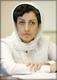

پذيرش > اخبار > ابراز نگرانی از وضعیت نرگس محمدی در نامه فعالان جنبش زنان به کمیسر عالی حقوق بشر (...)


 ابراز نگرانی از وضعیت نرگس محمدی در نامه فعالان جنبش زنان به کمیسر عالی حقوق بشر سازمان ملل ابراز نگرانی از وضعیت نرگس محمدی در نامه فعالان جنبش زنان به کمیسر عالی حقوق بشر سازمان ملل
20 خرداد 1391 - - نسخه قابل چاپ
بیش از چهار صد نفر از فعالان و حامیان جنبش زنان ایران طی نامه ای به خانم ناوی پیلای، کمیسر عالی حقوق بشر سازمان ملل درخواست کرده اند تا هرچه سریعتر و جدیتر به وضعیت بغرنج نرگس محمدی فعال حقوق بشر و نایب رییس کانون مدافعان حقوق بشر رسیدگی شود.
متن نامه به شرح زیر است:
سرکار خانم پیلای، کمیسر عالی حقوق بشر سازمان ملل متحد
ما جمعی از فعالان و حامیان جنبش زنان ایران، به استحضار جنابعالی میرسانیم که خانم نرگس محمدی فعال حقوق بشر و نایب رئیس کانون مدافعان حقوق بشر، بیش از دو ماه است که به دست نیروهای امنیتی بازداشت شده و طبق اظهارات مسئولان امنیتی برای گذراندن ۶ سال حبس روانه زندان شده است. خانم نرگس محمدی در سال ۲۰۱۰ در زندان به بیماری عصبی فلج عضلانی مبتلاشده و نیازمند رسیدگی ویژه پزشکی است. خانواده ایشان در ملاقات اخیری که روز ۲۵ می۲۰۱۲ با وی داشتهاند، وضعیت جسمی این فعال حقوق بشر را بسیار نگران کننده گزارش کردهاند. در آن ملاقات خانم نرگس محمدی، قادر به راه رفتن نبوده است. به طوری که وی را روی یک صندلی نشانده و ۴ نفر صندلی ایشان را به سالن ملاقات حمل کردهاند. وی براحتی قادر به تکلم نبوده و فرزندان خردسالش بشدت از وضعیت مادرشان متاثر و غمگین شدهاند. خانم نرگس محمدی به دلیل مقاومت در مقابل پیشنهادات غیر قانونی مبنی بر همکاری با ماموران اطلاعات از جمله اعتراف علیه کانون مدافعان حقوق بشر و علیه خانم شیرین عبادی رئیس این کانون و برنده جایزه صلح نوبل، به شدت تحت فشار قرار گرفته است. خانم نرگس محمدی بر خلاف قوانین ایران بعد از چند روز که در زندان تهران بودند به زندان زنجان تبعید شدند تا بقیه دوران محکومیت خود را درزندان شهرستان دیگری که شرایط و امکانات مناسبی ندارد سپری کند. در زندان زنجان ایشان در بند زندانیان عادی نگهداری میشود. مجموعه این موارد سبب فشار مضاعف و بدتر شدن وضعیت جسمی وی شده است. ما جمعی از فعالان و حامیان جنبش زنان ایران، با ابراز نگرانی از وضعیت ایشان اعلام میداریم نرگس محمدی طبق آیین نامه زندانها باید برای مداوا، از مرخصی استعلاجی استفاده کرده و پس از بهبودی کامل باید در زندان تهران که محل وقوع جرم ادعایی دادستان است و محاکمه نیز در آن شهر صورت گرفته است و محل سکونت وی نیز در آنجا بوده، محکومیت خود را سپری کند. در انتها توجه شما را به عدم استقلال قوه قضاییه و نفوذ ماموران امنیتی در امر دادرسی جلب میکنیم. سرکار خانم پیلای، نرگس محمدی یکی از سرمایههای اجتماعی میهن ماست که چنین بیمار درزندان زنجان که فاقد امکانات پزشکی و درمانی است زندانی شده است. ما به عنوان جمعی از فعالان وحامیان جنبش زنان ایران، نگرانی شدید خود را از وضعیت بحرانی سلامتی نرگس محمدی به اطلاع جنابعالی میرسانیم و از شما به عنوان مقام کمیساریای عالی حقوق بشر سازمان ملل متحد تقاضا داریم که در جهت آزادی این فعال حقوق زنان وحقوق بشر اقدام جدی مبذول فرمایید. با احترام
اسامی امضا کنندگان:
فعالان جنبش زنان
آذر مهلوجیان، آرش نصیری اقبالی، آزاده خسروشاهی، آزاده دواچی، آزاده فرامرزیها، آزیتا رضوان، آسیه امینی، امید کوهى، امیر رشیدی، انسیه سلمانی، آیدا سعادت، آیدا قجر، بهارا بهروان، بهرام عباسی، پرتو نوری علا، پرستو اله یاری، پرستو فروهر، پرویز داورپناه، پروین اردلان، پروین بختیارنژاد، پروین شاهرخی، پریسا کاکائی، پوران ریاضتی، پویا عزیزی، ترانه امیرتیموری، توران ناظمی، جلوه جواهری، جمیله نیرومندی، حمید صدر، حمیده نظامی، خدیجه مقدم، درسا سبحانی، دکتر ژاله گوهری نایینی، دلارام علی، رضوان مقدم، روجا بندری، روحی شفیعی، روشنک آسترکی، روناک نصیری، رویا صحرایی، رویا کاشفی، زهره اسدپور، زیبا میرحسینی، زینب پیغمبرزاده، ژاله طالب حریری، ژیلا افتخاری، ژیلا شریعت پناه، ژیلا گلعنبر، سپیده فارسی، ستاره آسمانی، سحر دیناروند، سحر مفخم، سعیده سهرابی، سمیه رشیدی، سهیل پرهیزی، سهیلا وحدتی، سوده راد، سوسن طهماسبی، سوفیا صدیقپور، سونیا عوضپور، سیاوش عابدیان، سیما بختیاری، سیمین نصیری، شعله زمینی، شقایق کمالی، شهابالدین شیخی، شهره ایرانی، شهلا عبقری، شهین دوستدار، شیرین عبادی، شیما فرزادمنش، شیوا نظرآهاری، صبا واصفی، صدیقه فخرآبادی، صدیقه وسمقی، طاهره برجیس، عاطفه گرگین، عشا مومنی، عصمت بهرامی، عفت ماهباز، علی عبدی، فاطمه حقیقت جو، فاطمه رضایی، فاطمه فرهنگ خواه، فرح شیلاندری، فرح کمانگر، فرزانه روستایی، فرزانه عظیمی، فرزانه قربانی، فریبا داودی مهاجر، فریبا محققی، فیروزه مهاجر، کاوه رضائی شیراز، کاوه کرمانشاهی، کیکاوس عباسی، گلبهار شریفی، گلرخ جهانگیری، گیتی پورفاضل، لیلا اسدی، لیلا صحت، ماریا رشیدی، محبوبه حسینزاده، محبوبه عباسقلیزاده، مرضیه بخشیزاده، مریم اکبری، مریم حکمت شعار، مریم رحمانی، مریم زندی، مریم میرزا، مژگان ثروتی، مسعود شب افروز، ملیحه محمدی، منصوره بهکیش، منصوره شجاعی، منوچهر لرستانی، منیره کاظمی، منیژه مرعشی، منیژه ناظم، مهدخت صنعتی، مهدیه فراهانی، مهرانگیز کار، مهرنوش اعتمادی، مهری جعفری، مهشید راستی، مهناز بدیهیان، مهناز پراکند، میترا آریان، میترا میرزازاده، میهن جزنی، نازی عظیما، ناهید جعفری، ناهید خیرابی، ناهید کشاورز، ناهید میرحاج، ناهید نصرت، ندا فرخ، نرگس توسلیان، نرگس محمدی، نسرین بصیری، نسیم سرابندی، نگار سماکنژاد، نوشین شاهرخی، نوشین کشاورزنیا، نوید زاهدی، نوید محبی، نیره توحیدی، الهام قیطانچی، الهه امانی، وریا بوداغی، ویدا حاجبی، ویکتوریا آزاد
حامیان
ابوالفضل (پویا) جهاندار، احترام عبدوست، احسان بداغی، احسان بشیرگنجی، احمد آزاد، اردوان ارشاد، ارشاد علیجانی، اسفندیار طبری، اسماعیل خطایی، اسماعیل زرگریان، اشرف حبیبی، اشکان فرید، اصغر نصرتی، افخم دیویس، اقبال اقبالی، اکبر دوستدار، اکبرزینالی، اکرم نادری، اکرم نقابی، امید پورمحمد علی، امیر صحتی، آذر یغمایی، آراز فنی، آری ملک، آزاد مرادیان، آزاده تهرانی، آسیه رجبزاده، آنا پاک، بابک ایماز، البرز دماوندی، بهرام پرتوی، بهزاد کریمی، بهمن امینی، بهمن نیرومند، بهنام صارمی، بیژن افتخاری، بیژن باقری، بیژن پیرزاده، بیژن مهر، پاپاستاتی بونیتا، پارسیان ملک، پروانه راد، پروانه وحیدمنش، پرویز مختاری، پروین شطی، پروین کوه گیلانی، پروین کهزادی، پروین ملک، پری شورابی، پریچهر افخمی، پریچهر نعمانی، پوران ابراهیمی، پوران کریمی، پولات هافمن، تراب مستوفی، جمشید خون جوش، جمشید طاهریپور، جمیله ناهید، جواد جواهری، جهانگیر لقایی، حسن بهگر، حسن زارعزاده اردشیر، حسن شریعتمداری، حسن کلانتری، حسن نایب هاشم، حسن یوسفی اشکوری، حسین دولت آبادی، حسین رفسنجانی، حسین علوی، حمید اکبری، حمید غفاری، حمید کوثری، حمید مافی، حمید نوذری، حمیدرضا مسیبیان، خسرو خسروی، خسرو گودرزی، خیرالله فرخی، داریوش دانش، داریوش رضایی، داریوش مجلسی، داریوش مقدم، داریوش وثوقی، داوود نوائیان، دکتر مختاری، رضا اغنمی، رضا جعفربان، رضا چرندابی، رضا سیاووشی، رضا علیجانی، رضا فانی یزدی، رضا هیوا، زهرا حسینزاده، زهرا شاهین، زینت کشورزاده، ژاکلین هوبرت، ژیلا جمالی، ژیلا مهدویان، ساحل سیستانی، سجاد ویس مرادی، سحر دیناروند، سراج میردامادی، سعید پیوندی، سعید شروینی، سلماز مقدم، سلمان سیما، سوسن ایزدی، سوسن یزدانی، سهراب بهداد، سهراب رزاقی، سیروس زارعزاده اردشیر، شاهین انزلی، شاهین پویا، شریفه بنی هاشمی، شکوه جوادیان، شهرام تهرانی، شهرزاد سپانلو، شهره حسنی زا ده، شهره عاصمی، شهریار آهی، شهلا بهاردوست، شهناز بیات، شهناز نیکبخش، شیرین دخت نورمنش، صدیقه شکری، صدیقه مقدم، صفوی، طلعت یگانه تبریزی، عباس اسدیان، عباس خرسندی، عباس رحیمیان، عزیز کرملو، عسل پیرزاده، عشرت بستجانی، علی ابراهیمی، علی افشاری، علی اکبر موسوی (خوئینی)، علی شاکری؛ علی صمد، علی فروزنده، علی ماهباز، علی مختاری، عیسی علوی، فاطمه خانی، فاطمه مقدم، فرزانه قربانی، فرزین بستجانی، فرشید یاسائی، فرشید فاریابى، فرهاد صدقی، فرهنگ رضایی، فریبا امینی، فریبا روستایی، فریبا عطائیان، فریبا فرنوش، فرید اشکان، فرید مهران ادیب، فریده یزدی، فیروزه محمودی، کاظم علمداری، کاوه هامونی، کاویان میلانی، کریم شامبیاتی، کمال ارس، کورش افطسی، کوروش صحتی، کوروش فرزین، کیان امانی، کیانوش سنجری، گلبهار شریفی، لی ابراهیمی، گودرز اقتداری، لیلا سیف اللهی، ماکان اخوان، مجید تمجیدی، مجید محمدی، محترم گل بابایی، محسن حیدریان، محسننژاد، محمد اولیایی فرد، محمد برقعی، محمد بهبودی، محمد حسین یحیایی، محمد صادق ربانی رانکوهی، محمد علی مهرآسا، محمد نجفزاده، محمد نصیری، محمد واجدی، محمود مهران ادیب، مرتضا ضیابری، مرتضی کاظمیان، مرسده محسنی، مریم عطاریه، مریم فاروقی، مریم محمدزاده، مریم موذنزاده، مریم نجفی، مزدک عبدیپور، مسعود سفیری، مسعود فتحی، معصومه ضیاء، ملیحه ذهتاب، ملیکا محمدی، منصوره فتحی، منوچهر فاضل، منوچهر محمدی، منیره برادران، مهدخت صنعتی، مهدی خرازی، مهدی سعیدپور، مهدی فتاپور، مهدی نوذر، مهدیه صالحپور، مهران جراح لایق، مهران جلیلوند، مهسا بختیاری، مهناز پراکند، مهناز دلاگیوانا، میترا ابراهیمی، میترا نجفی، میثاق پارسا، میر حمید سالک، میلاد ملک، مینا نیک، میهن جزنی، نادر فیروزی، نادره حسینی، ناصر پاکدامن، ناصر شعبانی، ناهید بارور، نریمان مصطفوی، نگار رهبر، نیما راشدان، نیما هاتفی، نینا صادقی، وهاب انصاری، هادی کحالزاده، هادی یار هدایتیان، همایون مهمنش، الهه گلکار، یادی دلاویز، یادی قربانی، یاسر معصومی، یاور خسروشاهی، یداله کوچکی دهشالی، یوسف عزیزی بنی طرف، یوسف کریمی
گروه ها و سازمان های حامی
کمیته دفاع از زندانیان سیاسی ایران-برلین
انجمن حقوق بشر و دموکراسی هامبورگ
سایت صدای مردم
کمیته گزارشگران حقوق بشر
حامیان مادران پارک لاله وین
حامیان مادران پارک لاله -فرانکفورت
حامیان مادران پارک لاله اسلو - نروژ
حامیان مادران پارک لاله - لس آنجلس -ولی
حامیان مادران پارک لاله - نورنبرگ
حامیان مادران پارک لاله - دورتموند
حامیان مادران پارک لاله -کلن
حامیان مادران پارک لاله -هامبورگ
حامیان مادران پارک لاله - ایتالیا
حامیان مادران پارک لاله - ژنو - سویس
ارسال به
بالاترین
،
توییتر
،
فریندفید
،
فیسبوک
در همين بخش :
 پروین ذبیحی برنده جایزه حقوق بشری سازمان غيردولتى اتريشى سودويند شد پروین ذبیحی برنده جایزه حقوق بشری سازمان غيردولتى اتريشى سودويند شد
پخش کارت پستال و بروشور در روز جهانی زن در تهران
تمدید زمان برای امضای بیانیهی جمعی از فعالان زن به مناسبت هشت مارس
مجوزی که در نطفه خفه شد
بیش از 2000 امضا در اعتراض به تبعیض های آموزشی به مجلس تحویل داده شد
ديگر بخش ها :
طرح یک میلیون امضا
|
مقالات
|
سایت نوشته ها
|
اخبار
|
گزارش كمپين
|
گفت و گو
|
علیه سکوت
|
كوچه به كوچه
|
نامه های شما
|
گزارش ویژه
|
گفتگو با اعضا
|
ویژه سالگرد کمپین
|
تصویر برابری
|
دل آرام علی
|
تریبون
|
مقالات
|
تاریخ شفاهی
|
خارج از چارچوب
|
کتابخانه
|
درباره کمپین
|
کمپین در شهرها
|
کمپین در بند
|
صدای تغییر
|
ویژه 22 خرداد
|
لایحه حمایت از خانواده
|
گالری
|
عشا مومنی
|
امیر یعقوبعلی
|
خدیجه مقدم
|
راحله عسگری زاده و نسیم خسروی
|
پروین اردلان،جلوه جواهری، مریم حسین خواه، ناهید کشاورز
|
زینب پیغمبرزاده
|
سعیده امین، سارا ایمانیان، محبوبه حسین زاده، ناهید کشاورز و همایون نامی
|
احترام شادفر
|
نسیم سرابندی زاده،فاطمه دهدشتی
|
وبلاگ مهمان
|
پرونده خرم آباد
|
دستگیری ها
|
مریم مالک
|
پرستو اللهیاری
|
مهرنوش اعتمادی
|
سمیه رشیدی
|
Other Languages
|
همراهان
|
«فراخوان کمپین ده روز با بهاره هدایت»
| English
|